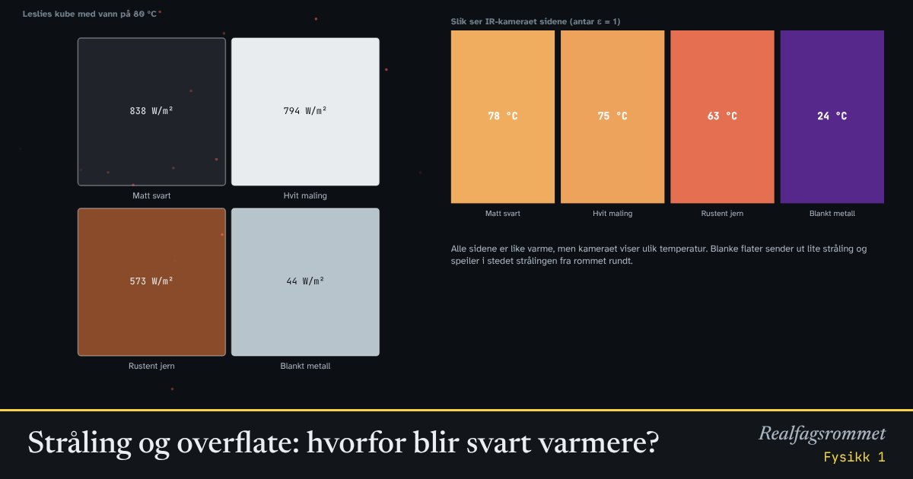

Stråling og overflate: hvorfor blir svart varmere?
Alle gjenstander sender ut varmestråling, men hvor mye avhenger også av overflaten. En matt svart flate stråler mye, en blank metallflate nesten ingenting, selv om de har samme temperatur. Det samme bestemmer hvor mye sollys som tas opp.
Start animasjonen
Formler
Om animasjonen
Et ideelt svart legeme sender ut watt per kvadratmeter. Virkelige flater sender ut en brøkdel av dette. kalles emissiviteten. Flater som stråler godt, absorberer også godt ved samme bølgelengde.
Leslies kube er en kube med varmt vann der sidene har ulik overflate. Alle sidene har samme temperatur, men en strålingsmåler viser mest fra den matte svarte siden og nesten ingenting fra den blanke.
Et IR-kamera regner ut temperaturen fra strålingen og antar ofte . Derfor ser blanke flater kalde ut på termografibilder selv om de er varme.
I sollys betyr det mest hvor mye synlig lys flaten absorberer (). Hvit maling absorberer lite sollys, men stråler godt i infrarødt, og holder seg derfor kjølig. Solfangere har flater som absorberer sollys godt, men stråler lite.
Prøv dette
- Hvor mye mer stråler den svarte siden enn den blanke ved 80 °C?
- Hvorfor ser en blank kaffekanne kald ut på et IR-bilde?
- Hvilken flate blir varmest i sola? Hvilken holder seg kaldest? Forklar.
- Hvorfor males tak i varme land ofte hvite?
Kompetansemål
- Fysikk 1: Stråling fra legemer med ulik temperatur og overflate
- Fysikk 1: Jordas strålingsbalanse